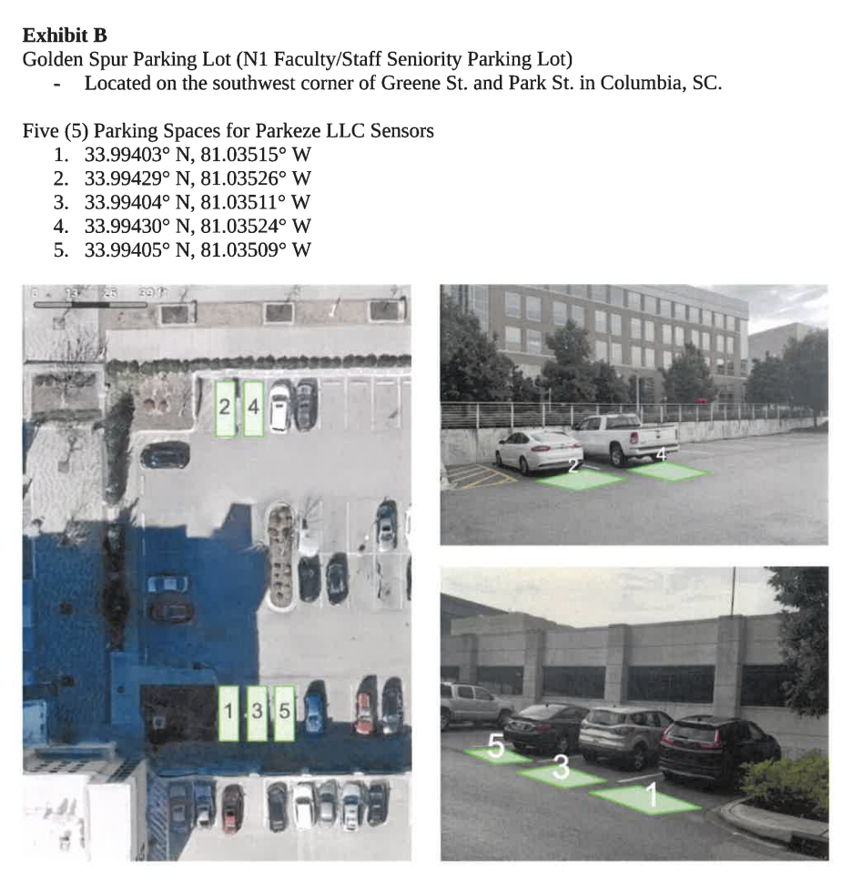
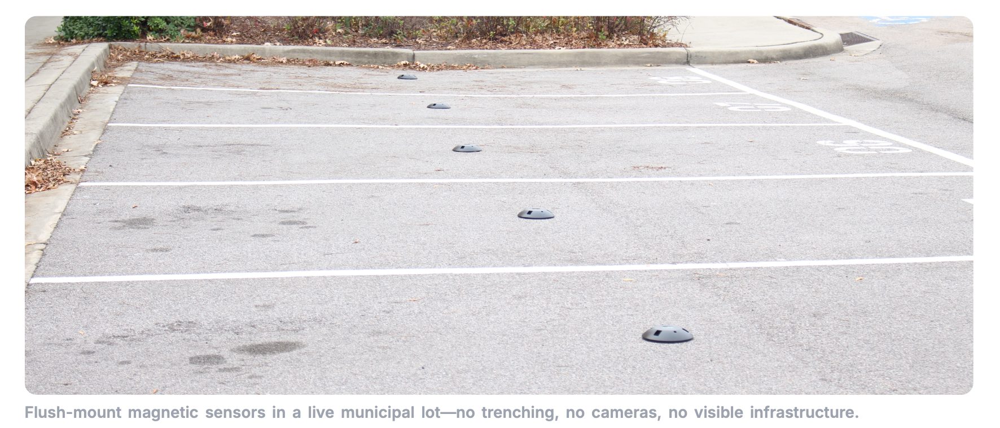

Data Source and Scope
The default dataset covers parking sensor records from October 19, 2025 through January 15, 2026. The comparison files cover January 11, 2026 through January 18, 2026. These files come from a partnered University of South Carolina pilot where sensors were installed on the ground to record space-level Occupied and Available events.
This dashboard is for student analysis and visualization only. It uses the provided local Excel reports and is intended to respect the project contract guidelines, data-sharing limits, and pilot-use restrictions.
More information about Parkeze is available at www.parkeze.com. Viewers can request access to the Parkeze developer platform and data analysis platform through the company website.
Pilot Location and Sensor Context
These images clarify the Golden Spur pilot location and show the type of flush-mount ground sensors used to collect the parking status data.


Loading main dataset...
How to Use
- Use the dropdown to switch between the provided Excel datasets.
- Hover over charts or heatmap cells to see exact values.
- The charts show daily trends, weekday averages, hourly patterns, and sensor activity.
- Occupancy is marked as a percentage; sensor activity is counted from raw status records.
Daily Parking Occupancy Trends Over Time
This line chart shows the average parking occupancy for each date in the report. It helps identify busier and quieter days and shows whether demand changes over time.
Average Occupancy by Day of Week
This bar chart compares average occupancy by day of the week. It shows whether parking demand is stronger on weekdays or weekends.
Hourly Parking Demand Patterns
This heatmap-style grid estimates average occupancy from raw sensor timestamps grouped by hour and weekday. Darker cells show times when parking demand is higher.
Sensor Activity and Usage Frequency
This bar chart counts the number of raw status records for each sensor. Higher values suggest spaces with more frequent parking activity.
Key Insights
The charts connect overall daily demand with hourly behavior and individual sensor activity.
- Load a dataset to see parking insights.
Disclaimer
Data shown here is limited to the provided pilot Excel reports. No external APIs, private systems, or live sensor feeds are used. Results should be read as an educational summary of the partnered USC pilot dataset, not as an official operational report.